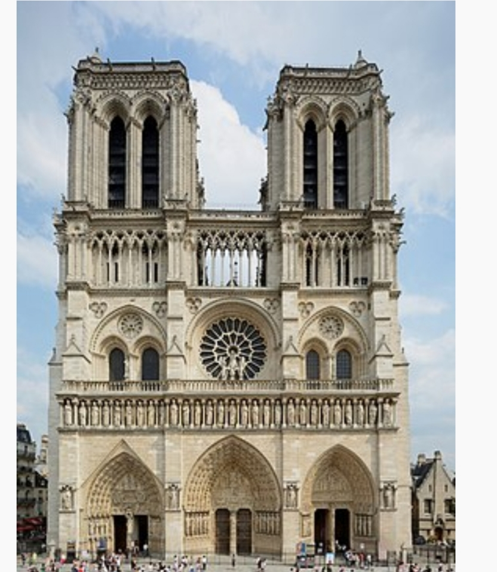

BIENVENUE A PARIS
PARIS
Paris capitale de la france est une grande ville européenne et un centre mondiale de l'art, de la mode,
de la gastronomie et
de la culture. La ville est réputée pour ses cafés et ses
boutiques de luxe bordant la rue du Faubourg-Saint-Honoré.
Tour Eiffel

La cathédrale Notre-Dame de Paris, communément appelée Notre-Dame, est la cathédrale de
l'archidiocèse de Paris, située sur l'île de la Cité. Dédiée à la Vierge Marie, elle est
pendant de nombreux siècles l'une des cathédrales les plus grandes d'Occident. Longtemps
la plus haute construction de la ville, elle est l'un des monuments les plus emblématiques de Paris.

Le Parc des Princes est un stade situé au sud-ouest de la ville de Paris, dans le 16e
arrondissement depuis 1897 et sur le périphérique parisien dans sa configuration actuelle.
Plus important stade français de 1972 à 1998, il est actuellement le cinquième plus grand
stade français, mais toujours l'un des plus
anciens et des plus connus de la région parisienne.